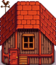
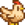

小屋
| 小屋 | 大型の小屋 | デラックス小屋 | |

|

|
 | |
|---|---|---|---|
| 情報 | |||
| アップグレード前の施設 | なし | 小屋 | 大型の小屋 |
| 建築費用 | |||
| 建築資材 | |||
| 収容可能数 | 4 | 8 | 12 |
| 動物 |  ニワトリ | ニワトリ |
ニワトリ |
| 設置面積 | 6x3 |
6x3 |
6x3 |
| 特徴 |
|
||
小屋は、大工作業場のロビンから購入可能な牧場施設の一種です。 大型の小屋、デラックス小屋とアップグレードできます。建築には3日かかり、アップグレードには2日かかります。
小屋ではニワトリが飼育可能で、それに加えて大型の小屋ではアヒルと恐竜が、デラックス小屋ではウサギが飼育可能となります。
デラックス小屋までの総計コストは、 34,000g、
34,000g、 木材（1200）、
木材（1200）、 石（450）（または全ての木材や石をロビンから購入した場合は
石（450）（または全ての木材や石をロビンから購入した場合は 55,000g）です。
55,000g）です。
大型の小屋以上ではふ卵器が設置されており、卵を孵化させることができます。 また、デラックス小屋は自動給餌システムを備えており、自動で干し草がサイロから餌置場に配置されます。 （この場合でも動物に外で牧草を食べさせることはでき、その際は干し草は消費されません。）
小屋のドアが閉まっていると動物が閉め出されることがあります。 閉め出される条件ははっきりしていません（外に閉め出される動物を参照）。夜に小屋の外に閉め出された動物は、翌日の気分は "不機嫌"になるでしょう。 閉め出されている動物も野生動物の襲撃の対象です。

内部画像

小屋

大型の小屋

デラックス小屋
| 建物 | ||
|---|---|---|
| お店 | アイスクリーム店 • オアシス • カジノ • 鍛冶屋 • マルチェロ書店 • 行商人のカート • 砂漠の商人 • 島のトレーダー • Jojaマート • 診療所 • スタードロップサルーン • 大工作業場 • 釣具店 • 巨大な切り株 • 廃墟の家 • ピエール商店 • 冒険者ギルド • マーニーの牧場 • 魔術師の塔 • ミスターQiの秘密のクルミの部屋 • 火山ドワーフのショップ | |
| 住宅 | ウィロー通り1番地 • ウィロー通り2番地 • エリオットの小屋 • 島の家 • 町長の屋敷 • ツリーハウス • テント • トレーラー • 牧場の家 • マウンテン通り24番地 • リアのコテージ • リバー通り1番地 • リバーロード2番地 • 島の家 | |
| 牧場施設 | 農業 | 井戸 • 馬小屋 • 温室 • 家畜小屋 • 小屋 • 小屋(マルチ) • サイロ • 魚のいる池 • スライムハッチ • 製粉機 • 納屋 • ペット用ボウル |
| 特殊 | アイランドオベリスク • 金時計 • 砂漠のオベリスク • 農場オベリスク • ジュニモ小屋 • 地球のオベリスク • 水のオベリスク | |
| その他の建物 | 犬小屋 • 映画館 • 公民館 • 島のフィールドオフィス • Joja倉庫 • スパ • 博物館 • 魔女の小屋 | |